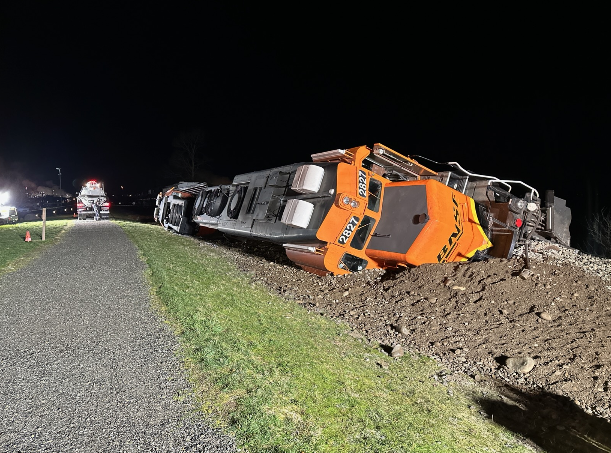
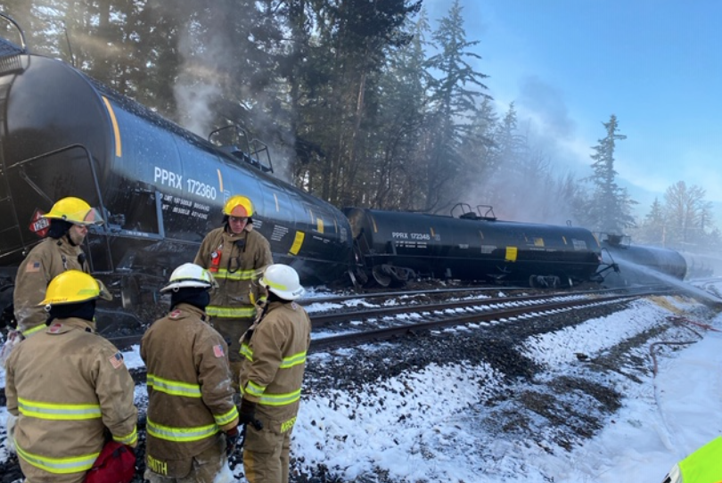

1: Oil Transportation by Train
In 2018, 27.8% or
59.6 bbls of all Washington oil was transported by train. Virtually all oil received in Washington previously was
received by ship or pipeline. The development of the Bakken oil fields in North Dakota, Montana, and Canada, has
resulted in oil also now arriving by rail” (WSDOT. pg. 76).
The shift to the transportation of crude oil by train
began in 2012 in Washington (WSDOT. pg. 2). Compared to pipeline projects, “...rail shipment has provided a
quicker, more flexible alternative". The increased amount of oil transported by trains introduces risk to the
communities surrounding these tracks.
This map contains Washington train rail data
and Washington oil refinary data. The map displays train routes
that carry oil and other fossil fuel products along with Washington oil refinary locations.
Click the points to display refinary information.
2: Population and Waterway risk
Many of the routes that carry oil by train pass through large cities, populated areas, and culturally
significant natural areas. “Rail routes transporting crude oil enter the state from Idaho near Spokane
and from British Columbia near Bellingham. Large segments of the rail routes travel along the I-5 corridor,
and cross or run next to major waterways, including the Columbia River and Puget Sound" (WSDOT. pg. 2).
Passing by such large waterways and populated areas introduces extreme risk if a spill were to occur.
Scroll north and south along the train line to see the proximity to the Columbia River, the Puget Sound and population
centers such as Seattle, Tacoma, Bellingham, Vancover, etc.
3: Impact on Seattle Residential Areas
"While regulatory agencies and first responders have been prepared for the potential risks associated with shipping
oil by ship or pipeline, shipment of oil by rail presents new risks related to spills. Several explosive derailments
involving trains carrying Bakken oil have raised concerns about the volatility of the oil and the potential effect of
a derailment in Washington communities" (WSDOT. pg. 76).
Oil tankers running in close proximity to residential homes can introduce risk. A half mile evacuation zone is
recomended when a train derails, but it is extended to a mile when oil in spilled. "A one-mile or more evacuation
zone can result when there are explosions and fires involving multiple tanker cars that can produce extensive plumes
of toxic fumes, smoke, particulate matter and heat at significant distances from burning oil tankers" (BiologicalDiversity) The spread of
oil fires represents a risk to communities living within a mile from the track.
In Seattle alone, 21,287 single and multi family homes are within a mile radius of the track running through their
city. If an oil tanker were to explode in Seattle, tens of thousands of people and millions of dollars of property damage could
be at risk.
This map contains Seattle, Washington single and muli family home data.
4: Spills into Waterways
Protecting waterways such as the Puget sound becomes increasingly important when considering the significance of the
species that live within them. An oil spill could have irreversible damage on nearshore salmon habitat and resident
killer whale habitat.
Killer whales living in the Puget Sound have a strong ecological link with direct evidence stating that north resident
killer whale group size directly correlates to Chinook salmon abundance (Williams, 2011). In the spring, salmon makes
up 100% of north resident killer whales when abundant (Hanson, 2021).
Puget Sound’s toxicity from “pulp, paper mills, oil refineries, ports, boatyards, and storm-water runoff” (Olsen, 2022, p. 3),
and degradation of freshwater habitats (Couture, 2022) has ruined nearshore salmon habitat. Without sufficient abundance in
Washington..., population recovery for these whales is impossible (Hanson, 2021).
Killer whales are a cultural and historical icon to the Pacific Northwest, living together with indigenous people in
the Puget Sound for 5000 years (EPA, 2023). Damaging the habitat of historically abundant food sources will
will continue to endange the resident killer whale.
RCW 88.16.190 states that “...a catastrophic spill would inflict potentially irreversible damage on the endangered southern resident killer whales”
Puget Sound Data.
5: Effects on Wetlands
Wetlands are a vital environmental asset to Washington State. "Wetlands are among the most productive ecosystem in the
world, comparable to rain forests and coral reefs. An immense variety of species of microbes, plants, insects, amphilbians,
retiles, birds, fish, and mammels can be part of a wetland system" EPA
Similarly to residential homes, wetlands could be damaged through toxid fumes, smoke, and oil fires to or more than a mile from the track. (BiologicalDiversity)
This map displays all Washington wetlands within one mile from from the track. 9,554 wetlands are at risk,
occupying ~119,856 square miles of at risk wetland areas.
Wetlands Data.
6: Tribal Land Intersect
This map shows the tribal areas that are within a mile of the BNSF Railway. These railways cut through tribal lands in Washington,
subjecting these lands to the pollution of waterways, damage to protected fishing areaas, polluted wetlands, and population risk.
In 2015, the Swinomish Indian Tribal Community were forced to file a suit against BNSF due to the breach of their 1991 agreement
which limited their traffic to 25 cars a day.
"The railroad began delivering 100-car unit trains carrying Bakken crude oil to a nearby refinery in 2012, despite objections
from tribal leaders." (RailNews)
"The case concluded against the backdrop of a March 16 derailment of two BNSF diesels and resulting in 3,100 gallons of fuel
spilling into waters in which the tribe has treaty-protected fishing rights" (RailNews)
This promotes a lack of trust and a false sense of safety when treaties are broken by BNSF railway.
Tribal Lands Data
7: Swinomish
This map shows the location of the BNSF oil spill that led to the conclusion of the Swinomish lawsuit. "The derailment in
Washington occurred on a berm along Padilla Bay, on the Swinomish tribal reservation near Anacortes. Most of 5,000 gallons
(nearly 19,000 liters) of spilled diesel fuel leaked on the land side of the berm rather than toward the water, according
to the state Ecology Department." (NPR)

Photo Source:
8: Custer
This map shows the location of an BNSF train derailment that spilled oil in proximity to the Lummi tribal reservation. "At
approximately 11:40am on December 22, 2020 a BNSF train derailed at mile post 111.7 near Custer, WA. Ten rail cars
derailed with several overturning, spilling Bakken crude oil. Three of those cars leaked oil and caught fire"
By Tuesday Jan 12th, "An estimated 28,962 gallons of oil were lost in the incident. Much of that amount burned up,
evaporated or was recovered afterward, leaving 5,400 to 8,000 gallons unrecovered.(NPR)

Photo Source: